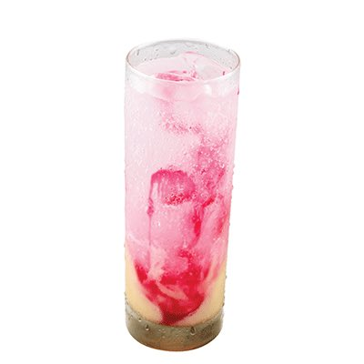

Soda
Gembira
Bahan Bahan
300 ml air.
150 ml Susu kental manis.
150 ml Air soda.
Cara Membuat
Siapkan air matang 300ml dan tuangkan Frisian Flag Kental Manis Cocopandan 150ml lalu aduk sampai merata
Tuangkan ke dalam cetakan dan simpan ke dalam freezer hingga beku
Masukkan ke dalam gelas dan tuangkan air soda 150ml
